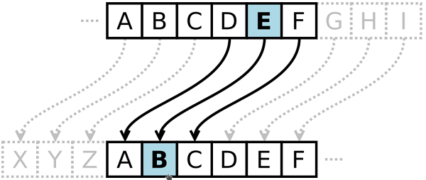

Galeria

Popiersie z Tusculum - Juliusza Cezara, który prawdopodobnie używał tej techniki do komunikacji ze swymi przyjaciółmi. Stosował szyfr przesuwający z przesunięciem równym 3.
Szyfr Cezara zastępuje każdą literę tekstu jawnego inną, przesuniętą względem litery kodowanej o stałą liczbę pozycji w alfabecie. Na rysunku szyfr z przesunięciem równym 3, tak więc B w tekście jawnym jest podmieniane w szyfrogramie na E (rozpatrywany jest alfabet łaciński).

Uzycie szyfru jako motyw edukacyjny. Zasada jest prosta, ale zabawę tę można znakomicie uatrakcyjnić przygotowując maszynę szyfrującą, do wykonania korzystając z szablonów.